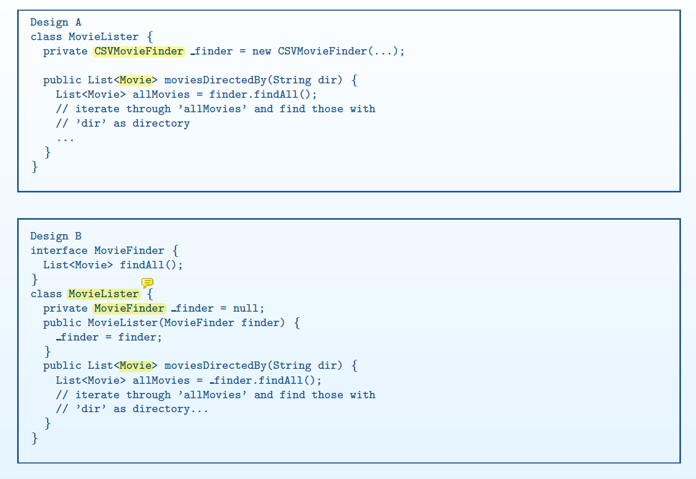

PAQ 3.1
You have learned that in the code you are trying to understand, the variable a is used to track how many times the character ’a’ has been seen in the input string. Which of the following elements (listed in alphabetical order) of the comprehension model we have been using is most relevant to this?
(a) Assimilation Process
(b) External Representation
(d) Knowledge Base
(c) Mental Model
Keyword: You have learnt that the code you are trying to understand
Therefore, Mental Model.
PAQ 3.2
For the comprehension model discussed in the course, explain the difference between the mental model and the knowledge base. Use (small!) code examples to illustrate the difference.
1 | private double calculateChildrenBookRentCharge(int days) { |
Mental Model is our active understanding/hypotheses of what the current programme does, and Knowledge Base is what we already know
As we read the method name calculateChildrenRentCharge, we register a hypothesis into our mental model that the method is likely intended to calculate an amount of money, payable for renting a children’s book.
It is in our Knowledge Base that money needs to be represented with two digits after decimal, and that double type supports such representation of money. These two pieces of information from Knowledge Base helps validates the hypothesis in Mental Model that the method returns amount of money.
We also access from Knowledge Base that Math.max take two values as parameters and returns the bigger value, and * means to multiply the values on its two sides.
We now can add to our Mental Model that the method calculates rent for children in such a rule: charge 0.1 per day, but charge at least 0.5 when renting less than 5 days.
PAQ 4.1
Recall the paper: J. Bauer, J. Siegmund, N. Peitek, J. C. Hofmeister and S. Apel,
”Indentation: Simply a Matter of Style or Support for Program Comprehension?,” 2019
IEEE/ACM 27th International Conference on Program Comprehension (ICPC), Montreal,
QC, Canada, 2019, pp. 154-164, http://doi.org/10.1109/ICPC.2019.00033
- What was the main goal of the research described in this paper?
- The results from the study in this paper were essentially negative—they were not able to find evidence for their hypotheses. Give 2 (TWO) explanations for why they got negative results. Be specific.
Main goal: To find out whether indentation affect the efficiency and effectiveness of code comprehension.
Reasons why no effects are found:
- Maybe the indentation has no effect and the original study with positive effect got the result from other variables.
- Maybe the participants in the research are trained/educated in a way that are resilient to changes in format of indentation.
- Maybe the code example was so easy that even represented with bad indentation, the reader can still comprehend it in a short time that shows no noticeable difference with good indentation version.
PAQ 4.2
Consider the following code fragment (which comes from the JUnit 4.11 implementation for
org.junit.Assert):
1 | /** |
Briefly comment on the usefulness of this comment.
One good reason for giving comments: explain something that on the surface looks strange.
As a technical rule, we make constructors public. The fact that this constructor is not public but protected is different from the usual practices in an average readers’ Knowledge Base.
We could not explain why with naming, because the constructor has to be named Assert. Therefore, comment will be the only way and an effective to provide an explanation on why using the protected visibility here.
PAQ 5.1
Explain, using the comprehension model, under what conditions functions with 2 parameters are harder to comprehend than functions with 1 parameter.
1 | private double calculateRentCharge(int days, string memberType) { |
The second parameter is a flag that tells calculateRentCharge how to calculate the rental charge based on membership type of the book renter.
The function is actually doing three things, and the code will be more comprehensible if they are split into three methods:calculateChildrenRentCharge(int days), calculateLoyalRentCharge(int days), calculateCasualRentCharge(int days). The names of these methods better reveal the ONE thing that the method is doing, and their mapping with problem will be easier to be registered to reader’s Mental Model, thus increasing the efficiency of comprehension.
PAQ 5.3
Suppose you were shown two designs for a system, Design A, which has 5 classes, and Design B, which has 9 classes. For both designs, you agree that the classes are reasonable. Which design do you think is likely to be more comprehensible and why?
If you choose your classes well and you choose the names well, having more classes means we have a more refined mapping between class and smaller concepts in the context/design schema.
It will be easier to index the mapping between classes and the smaller concepts they represent. It will be easier to access our mental model when we see the usage of the classes in the source code. The comprehension will be more efficient, because we do not need to read into more details of a larger class to understand what the class is doing.
Therefore, 9 classes are likely to be more comprehensible than 5 classes.
PAQ 6.1
Give an example of how use of “Argument Objects” will not improve comprehensibility.
Explain your answer.
1 | private double calculateRentCharge(int days, string memberType) { |
This method takes in two arguments, but they do not belong to the same concept. days is related to the one-off rent, while memberType is related to the member.
If we put them into an argument object, and call it something like rentInformation, the reader will not be able to map rentInformation with a concept in the context schema of a book renting store. Therefore, it is hard to register what this object means into Mental Model for quick access. Instead, the reader need to frequently look into External Representation for the two concepts that rentInformation contains, which is slower. As a result, having this argument object reduces the efficiency of comprehensibility.
PAQ 7.1
Give an example of a poor code review comment. Explain why it is poor and how it could be improved.
“This method could be better”.
- Why it is poor code review comment: Not a constructive feedback, does not help the developer to find a direction to improve the code.
- Improve it: Identity the issue with the code that might cause a problem, suggest alternative(s) to improve the code. For example: “This method
calculateRentPrice(int days, boolean loyalUser)could be broken into two methodscalculateLoyalUserRentPrice(int days)andcalculateCasualUserRentPrice(int days), so that each method will have a simpler responsibility”.
PAQ 7.2
Consider designs A and B, that differ in that B has both more classes than A and matches the context schema better than A does.
Explain, in terms of C and N, why Design B is likely to be more alterable than Design A.
For better alterability, we want more classes in total (bigger N) and less classes to be modified (lower C).
Design B is likely to have Lower C:
If design B better matches the context schema, each class in design B is more likely to represent one single concept and only have one Single Responsibility.
Each class will have only one reason to change: when the corresponding concept in the context schema needs to be changed. For a given change requirement, code changes in design B is likely to concentrate on one, or a few, classes that represent the specific concept(s).
On the other hand, design A does not match the context schema so well, and the representation of a certain concept might be scattered in multiple classes. When a concept in the context schema needs to be changed, design A will have no fewer classes to be changed than B, and very likely more classes to be changed.
Design B has Bigger N:
As mentioned in the question, design B has more classes than design A, therefore B has a bigger N.
Design B has lower C/N ratio:
Therefore, design B has a lower C/N ratio than design A, so design B is more alterable than A in terms of C and N.
PAQ 8.1
Give an example of when you would use setter injection over constructor injection. Explain why using the setter injection is more appropriate than constructor injection in your example.
When the Service being used by the Client needs to be altered during runtime, setter injection is more appropriate than constructor injection.
For example, if we want to have a TextEditor that supports grammar checking for multiple languages. grammarChecker is the service interface and TextEditor is the client.
There will be concrete GrammarChecker services in different languages/dialects, like BritishEnglishGrammarChecker and AmericanEnglishGrammarChecker, and we want to allow the user of the TextEditor to change which language they want to write in during the runtime.
The TextEditor object will have already been constructed when the user wants to change which GrammarChecker service to use, so constructor injection is not appropriate.
By contrast, setter injection offers more flexibility to change the concrete GrammarChecker service object whenever the user chooses to, without breaking the lifecycle of the TextEditor object.
1 | public class TextEditor { |
1 | public interface GrammarChecker{ |
PAQ 8.2
Explain, in terms of C and N, why use of dependency injection generally improves the alterability of the design.
Let’s examine a highly likely change case with big impact on the capacity of the programme - adding a new concrete service:
- C:
- In a design (A) that uses dependency injection, the Client (where the service is injected into) will only depend on the abstraction - service interface, instead of any specific concrete implementation of service. When the new concrete service needs to be added, only the Injector will need to be modified to construct the new service object and inject it, therefore C will be 1, which is the minimum possible value.
- In a design (B) without dependency injection, the number of classes being changed depends on how many clients depend on the concrete implementation of services that will have to be changed.
- Therefore, C(A) <= C(B).
- N:
- On the other hand, dependency injection adds extra service interface to design A, so N(A) > C(B).
- C/N:
Therefore, dependency injection reduces C/N of design A for this typical change case.
The same argument will generally apply to other change cases too, as design injection makes classes less coupled with each other’s concrete implementation.
Therefore, dependency injection generally improves the alterability of a design.
PAQ 9.1
Give an example that shows both Command and Template Method.
JUnit:
- Command pattern
TestCaseis the command- Command relies on a single method to invoke it. Here it is
TestCase.run(). - This simple interface allows us to invoke different implementations of a command through the same interface.
- Template Method
run()is the template method that defines the skeleton of algorithm for executing the test case.setUp(),runTest()andtearUp()are hook methods that will be overriden by subclasses ofTestCase().- Each concrete implementation of
TestCase()runs test following the same procedure: set up, run the test, then tear down; but each specific sub-step is decided by the specific subclass.
PAQ 9.2
Describe two SOLID Principles that Dependency Injection follows
- Dependency Inversion: The client depends on the abstract service interface, not the concrete service class.
- Open-Closed Principle: The client is closed for modification, but open for extension/variation of behaviours by injecting different concrete service instances into it.
PAQ 10.1
Explain the code smell Refused Bequest in terms of violating one or more SOLID principles
Liskov Substitution Principle:
Refused bequest means the child class does not inherit all the features/functionalities of the parent class. In a programme where such “refused” features of the parent class are used, we will not be able to replace the parent class with its child class. Therefore, Refused Bequest violates Liskov Substitution Principle, which flags an inappropriate inheritance.
PAQ 10.2
Describe how following SRP will likely lead to lower coupling?
Design that follows SRP will have classes that have a single responsibility each, and map to one concept in the context schema. This means the classes will not need to depend too much on the other classes to represent the concept it is trying to represent. Each class is likely to fulfill its responsibility without relying too much on the other classes.
PAQ 10.1-2

Why is Design B better than Design A?
Instead of creating a CSVMovieFinder instance within the MovieLister and use it as the finder service in Design A, Design B’s MovieLister depends on the abstract MovieFinder, and a MovieFinder instance is injected into MovideLister object upon its construction.
Design B follows these Design Principles:
- Open-Closed Principle.
MovieListeris closed to modifications on how it usesMovieListerobject to conduct tasks like finding movies, but it is open to extensions on behaviours by being injected new subclasses ofMovieFinder. - Dependency Inversion Principle. Design B uses the abstract
MovieFinderinstead of any concrete implementations of it.
As a result, Design B is better than Design A because:
- Design B is more alterable.
- The most likely changing case is to add a new way of storing, indexing and finding movies. Design B makes such change cases very easy, by simply adding a new subclass extending
MovieFinderto achieve the new way of handlingMovieobjects, and then changing the injector to instantiate the new concreteMovieFinderand inject it intoMovieLister. - The C in the “change ratio” will be as low as 1 (only changing the injector).
- The simplicity of changes on existing classes reduces efforts of implementing the change case and reduces chances of introducing new defects. Therefore, it will be more effecient and more effective to make changes on Design B.
- The most likely changing case is to add a new way of storing, indexing and finding movies. Design B makes such change cases very easy, by simply adding a new subclass extending
- Design B is more testable.
- Because Design B’s
MovieListerallows injection of any concreteMovieFinder, when writing test cases we can inject mockMovieFinderobjects into it. - We can manipulate the outcomes of method invocations on the mock
MovieFinder, therefore enhancing our controllability on the tests. - We can record method invocations and state changes on the mock
MovieFinderand observe them to see if they are what we expect, therefore enhancing the observability of the tests.
- Because Design B’s
PAQ 10.1-3
Why does the smell of Larger class lead to lower alterability?
- The larger the class, the more of the total code in the whole programme it occupies, the more change cases it is likely to need to be changed for.
- If we use the C/N heuristics, this increases C in the “change ratio”, therefore lower alterability.
- This also increases the efforts in reading through the class and locating where to make the change, and things can go wrong in this process. Thus, the efficiency and effectiveness of making changes on the programme are lowered.